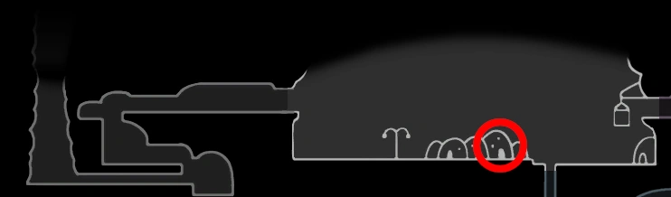

Este Amuleto é útil para exploração e é bom para quem está jogando pela primeira vez, ele mostra o seu personagem no mapa, facilitando a exploração e escolher as melhores rotas ao decorrer do jogo. É recomendado trocar por algo mais orientado a combate ao preparar-se para uma batalha de chefe.
Bússola Caprichosa
Comprado pela Iselda em Dirtmouth por 220 Geo depois de encontrar Cornifer pela primeira vez.
